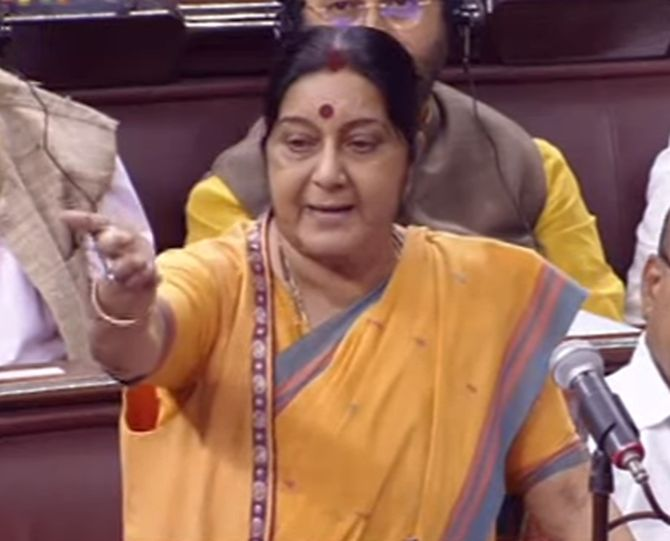

The Times of India

Stop promoting terror, we will start talks: India's message to Pak
India will start dialogue with Pakistan the day it stops promoting terrorism against this country, External Affairs Minister Sushma Swaraj said in Parliament on Thursday, while making it clear that terror and talks cannot go together. A combative Swaraj rejected the Opposition contention that the Modi government has no policy with regard to Pakistan, asserting that it had laid the "roadmap" envisioning peace and normalcy even before it took over. "But it can't be one-sided... Terror and talks cannot go together. The day they stop promoting terror, we will start the talks," she said replying to a discussion on "India’s foreign policy and engagement with strategic partners". "You are asking what is our Pakistan roadmap? We had declared it even before the swearing-in. We had invited prime ministers of all the neighbouring countries and all came... Bilateral meetings were also held and I was present," Swaraj said. She recalled that the then Prime Minister of Pakistan Nawaz Sharif along with leaders of all other neighbouring countries had been invited to the swearing-in ceremony of the Modi government in May 2014. Since then, the relations with Pakistan have been witnessing ups and downs, she said. The external affairs minister said when she visited Pakistan for the 'Heart of Asia Conference' on December 9,2015, Sharif had said the dialogue should be started in a new format and it was given the name of Comprehensive Bilateral Dialogue. Afterwards, Modi went to Lahore as part of that initiative, taking an 'out-of-box' decision, she said.Not war, diplomacy needed to resolve Doklam crisis: Sushma
India says the border standoff with China cannot be resolved by war, but can be settled through bilateral talks. External Affairs Minister Sushma Swaraj told the Rajya Sabha on Thursday, August 3, that "patience is key to resolving problems" because if patience is lost, there can be provocation on the other side. "We will keep patience to resolve the issue," she said, referring to the India-China standoff on the Dokalam Plateau. "We will keep engaging with China to resolve the dispute," Swaraj said, replying to a discussion on 'India's foreign policy and engagement with strategic partners' during which MPs voiced concern over the standoff and raised questions over India's policy. Military readiness, the minister said, is always there as the military is meant to fight wars. "But war cannot resolve problems," Swaraj added. "So wisdom is to resolve diplomatically." The minister expressed confidence that the issue could be resolved through bilateral talks. Admitting that the Chinese presence in the Sikkim area is a matter of concern for India, she said, "India always believes that peace and tranquility on the India-China border is the key to maintaining good bilateral relations."
